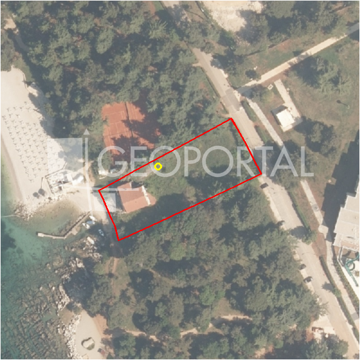

#45592 · ŽBANDAJ-građevinsko zemljište
Poreč, Poreč, Istarska · zemljiste · njuskalo · status active · oglas ↗
Ocjena
- Score
- 57 rule 57 · LLM – · 12.09.2026.
- RLV
- 1,87 M€ (673 €/m²) · ratio 7,48
- Ukupna investicija
- 5,38 M€
- GBP
- 2.000 m²
- Feedback
- –
- CRM
- –
Oglas
- Cijena
- 250.000 € (89 €/m²)
- Površina
- 2.802 m² · DKP 2.777 m² (odstupanje -0,9 %)
- Prodavatelj
- agencija · RE/MAX Centar nekretnina
- Prvi put
- 11.09.2026. · zadnje 11.09.2026. · 0 d na tržištu
- Duplikati
- kod 3 agencija: njuskalo 295.000 €, njuskalo 262.000 €
Povijest cijene
| Datum | Cijena |
|---|---|
| 11.09.2026. | 250.000 € |
Flagovi
zop_70_100 ZOP pojas 70/100 m (−10)zgrade_bez_rusenja zgrade na čestici bez spomena rušenja (−10)
zone_uncertainty zona nije pregledana (reviewed: false) (−5)
parcelacija fazni projekt / parcelacija
duplikati isto zemljište kod više agencija
llm_pending LLM ekstrakcija/ocjena nedostupna
Komponente score-a
| rlv | {'gbp': 1999.5624, 'kis': 0.8, 'nkp': 1499.6718, 'noi': None, 'rlv': 1868938.8127826091, 'ratio': 7.475755251130437, 'value': None, 'phases': 2, 'profile': 'obala_visestambeno', 'gdv_neto': 8398162.08, 'cost_soft': 399912.48000000004, 'gdv_bruto': 10497702.6, 'kis_known': False, 'total_inv': 5383879.744000001, 'cost_build': 3999124.8000000003, 'cost_other': 719842.464, 'cost_sales': 314931.078, 'demolition': False, 'gbp_source': 'kis', 'rlv_per_m2': 672.9652173913045, 'parcel_area': 2777.17, 'parcelation': True, 'roi_on_cost': 0.5013765883252237, 'profit_at_ask': 2699351.2579999994, 'cost_demolition': 0.0, 'total_inv_phase': 2824439.872, 'parcel_area_effective': 2499.453, 'sale_price_per_m2_nkp': 7000.0} |
| hard | [] |
| info | ['parcelacija', 'duplikati', 'llm_pending'] |
| rubric | {'permits': {'max': 5.0, 'detail': {'permit': 'none'}, 'points': 0.0}, 'location': {'max': 15.0, 'detail': {'source': 'rlv.yaml:istra_zapad/row1', 'sale_price_per_m2_nkp': 7000.0}, 'points': 15.0}, 'physical': {'max': 4.0, 'detail': {'slope_pct': 15.58, 'slope_points': 1.442, 'sea_row1_bonus': True}, 'points': 2.44}, 'liquidity': {'max': 3.0, 'detail': {'n_cuts': 0, 'points_cut': 0.0, 'points_days': 0.008333333333333333, 'seller_type': 'agencija', 'points_fresh': 0.5, 'price_cut_pct': None, 'days_on_market': 1, 'points_private': 0}, 'points': 0.51}, 'rlv_ratio': {'max': 25.0, 'detail': {'rlv': 1868939, 'ratio': 7.476, 'asking_price': 250000.0}, 'points': 25.0}, 'ticket_fit': {'max': 10.0, 'detail': {'asking_price': 250000.0}, 'points': 6.67}, 'zone_quality': {'max': 8.0, 'detail': {'reason': 'zona nepoznata', 'source': 'nepoznato', 'zone_class': None}, 'points': 2.0}, 'profit_potential': {'max': 20.0, 'detail': {'roi_on_cost': 0.501, 'profit_at_ask': 2699351}, 'points': 20.0}, 'price_vs_benchmark': {'max': 10.0, 'detail': {'source': 'auto:Poreč', 'deviation': 0.487, 'ask_eur_m2': 89, 'benchmark_eur_m2': 173.89}, 'points': 10.0}} |
| weights | {'llm': 0.4, 'rule': 0.6, 'model': 0.0} |
| penalties | {'zop_70_100': 10, 'zone_uncertainty': 5, 'zgrade_bez_rusenja': 10} |
| raw_score | 81,6 |
| rlv_notes | ['parcelacija: > 2500 m² → fazni projekt, −10 % površine, +5 % soft', 'fazni projekt: 2 faze; investicija prve faze 2,824,440 €'] |
| flag_notes | {'phases': 2, 'max_gbp': 2000, 'zop_band': '70', 'total_inv': 5383880, 'zone_code': None, 'dupl_count': 3, 'zone_class': None, 'zone_source': 'nepoznato', 'zone_reviewed': None, 'dupl_price_max': 295000.0, 'dupl_price_min': 250000.0, 'buildings_share': 0.157, 'total_inv_phase': 2824440} |
| caps_applied | [] |
GIS
- Čestica
- k.o. 323748, k.č. 3710/2 (pin_buffer, 0,90); k.o. 323748, k.č. 3708 (pin_buffer, 0,47); k.o. 323748, k.č. 3706 (pin_buffer, 0,31)
- Zona
- – (–)
- kig / kis / katnost
- – / – / –
- GP / UPU
- – · UPU –
- Pristup / nagib
- unknown · 15,6 % (max 27,9 %)
- More
- 5 m · red 1 · ZOP 70
- Zaštite
- Natura ne · zaštićeno ne · kulturno dobro ne
- Zgrade na čestici
- 16 %
- Match
- 0,90
Karta
Ortofoto (DOF)

RLV kalkulacija — pretpostavke
| gbp | {'value': 1999.5624, 'source': 'kis'} |
| kis | {'value': 0.8, 'source': 'default_profila'} |
| sea_row | {'value': '1', 'source': 'gis'} |
| soft_pct | {'value': 0.1, 'source': 'profil+parcelacija'} |
| nkp_ratio | {'value': 0.75, 'source': 'profil'} |
| cost_other | {'value': 719842.464, 'source': 'profil: doprinosi+uređenje po m² GBP, financiranje+rezerva % gradnje'} |
| parcel_area | {'value': 2777.17, 'source': 'dkp'} |
| asking_price | {'value': 250000.0, 'source': 'oglas'} |
| margin_on_cost | {'value': 0.15, 'source': 'profil'} |
| build_cost_per_m2_gbp | {'value': 2000.0, 'source': 'profil'} |
| sale_price_per_m2_nkp | {'value': 7000.0, 'source': 'rlv.yaml:istra_zapad/row1'} |
| transfer_tax_and_acquisition | {'value': 0.06, 'source': 'profil'} |
Ekstrakcija iz oglasa
| utilities | ['struja', 'voda', 'plin', 'kanalizacija'] |
Benchmarks mikrolokacije
| Vrsta | Vrijednost | n | Od | Izvor |
|---|---|---|---|---|
| land_ask_eur_m2 | 174 | 302 | 11.09.2026. | auto |
| newbuild_sale_eur_m2_nkp | 3.695 | 8 | 11.09.2026. | auto |
Opis oglasa
Prodaje se zemljište u Žbandaju površine 2802 m2. Parcela je pravilnog oblika, mogućnost izgradnje obiteljskih kuća ili višeobiteljskih zgrada do 5 stambenih jedinica. Sva infrastruktura se nalazi u neposrednoj blizini. ID KOD AGENCIJE: 300391007-273 Sandra Ritoša Prodajni predstavnik Mob: +385 91 641 6200 Tel: 00385 52 435 428 Fax: 00385 52 638 220 Licenca: 32/2018 E-mail: s.ritosa@remax-istra.hr www.remax-centarnekretnina.com